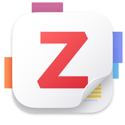

전화 게임을 멈춰라: 왜 계보인가
전화 게임은 여러 사람이 줄지어 서서 귓속말로 문장을 전달하는 놀이다. 전달이 거듭될수록 말이 조금씩 달라져, 끝사람에게는 처음과 전혀 다른 말이 도착한다. 논문 인용에서 한 단계씩 건너 인용할 때 개념의 뜻이 조금씩 달라지는 일을 이 놀이에 비유한 것이다.
논문을 쓰다 보면 '장소성', '자연적 감시', '보행친화성' 같은 개념어를 쓰게 된다. 이때 대부분의 연구 입문자는 최근 국내 논문 한두 편을 인용하는 것으로 개념 정의를 끝낸다. 문제는 그 논문 역시 다른 국내 논문을 인용했고, 그 논문은 또 다른 논문을 인용했다는 데 있다. 3차, 4차 인용을 거치는 동안 개념의 의미는 전화 게임처럼 조금씩 변형된다. 번역 과정에서 뉘앙스가 달라지기도 하고, 원저에서는 조건부였던 주장이 어느새 무조건적 명제로 굳어지기도 한다.
원문까지 내려가면 두 가지를 얻는다. 첫째, 개념의 본래 의미: 원저자가 어떤 문제의식에서 그 말을 만들었는지. 둘째, 그 개념에 얽힌 명제가 애초에 증명된 것인지 제안된 것인지에 대한 판단 근거(제9장의 주제). 이 두 가지 없이 개념어를 쓰는 것은, 출처를 모르는 부품으로 건물을 짓는 것과 같다.
실전: '장소성'의 계보를 내려가 보다
장소성: 2020년대 서울에서 1970년대 현상학적 지리학까지
2020년대 국내 논문에서 출발하자. 최근 국토계획에 게재된 한 연구는 Tuan(1977)의 장소성 개념에서 '경험'에 초점을 두어, 서울 주요 장소 71곳의 블로그 텍스트를 LLM으로 분석해 이용자들이 인식하는 장소성을 파악하였다. 이 논문의 이론적 배경은 Relph(1976)와 Tuan(1977)을 인용한다: 사다리의 첫 단이 보인다.
한 단계 내려가면 국내 도입기가 있다. 이석환(1998)의 '도시 가로의 장소성 연구'(국토계획)를 비롯한 1990년대 연구들은 서구의 장소 이론을 국내 도시 맥락으로 번역했다. 이 시기 논문을 원저와 대조하면 번역·변형의 지점이 보인다. 서동진·김주연(2022)이 지적하듯, 장소감·장소성·장소정체성 등 유사 개념이 국내에서 혼재되어 사용되어 왔기에 개념의 위계를 정리하는 작업 자체가 하나의 연구가 되었다.
사다리의 끝에는 원저가 있다. Relph(1976)의 Place and Placelessness는 단행본 전체가 장소와 무장소성 개념을 체계화한 논증이고, Tuan(1977)의 Space and Place는 경험의 관점에서 공간이 장소가 되는 과정을 다뤘다. 두 책은 1960~70년대 현상학적 지리학의 흐름 위에 서 있다. 여기까지 내려와야 비로소 '내가 쓰는 장소성이 Relph 계열인지 Tuan 계열인지'를 말할 수 있게 된다.
절차를 일반화하면 네 단계다. ① 최신 논문에서 개념의 인용 출처를 확인한다. ② 그 출처 논문을 열어 같은 개념의 인용 출처를 다시 확인한다. ③ 더 이상 인용이 없는 문헌(개념이 처음 정의된 원저)에 도달할 때까지 반복한다. ④ 각 단계에서 의미가 어떻게 변형되었는지 기록한다. 기계적으로 반복하면 습관이 된다.
AI가 알려준 출처를 다루는 규칙
생성형 AI는 계보 추적의 훌륭한 출발 도구다. '장소성 개념의 기원이 되는 문헌을 알려 달라'고 물으면 몇 초 만에 후보 목록이 나온다. 그러나 AI는 존재하지 않는 논문, 실존 저자의 가짜 저작을 그럴듯하게 지어내기도 한다. 이를 환각(hallucination)이라 한다. 연도가 틀리거나, 실존하는 두 논문의 제목이 합성되는 경우도 흔하다.

이 강의가 Zotero를 쓰는 이유
AI나 교재의 요약은 틀릴 수 있고, 환각이 섞인 출처도 있다. 그래서 이 강의는 원문을 직접 확인하고 그 출처를 끝까지 관리할 수 있는 도구로 Zotero를 쓴다.
- 원문 확인이 먼저다: 요약은 틀릴 수 있으므로 원문을 직접 확인해야 하고, 그러려면 출처를 잃지 않게 저장하고 관리할 수단이 필요하다.
- 한 번에 저장: 웹 브라우저 확장 프로그램으로 논문의 서지와, 접근 가능한 경우 PDF를 버튼 한 번으로 저장한다.
- 출처 추적: 서지 정보에 DOI, URL, 원문 PDF가 함께 붙어 '어디서 왔는지' 바로 확인할 수 있다.
- 중복 정리: 같은 논문이 여러 DB에서 들어와도 중복 항목을 찾아 하나로 합칠 수 있다.
- 인용 자동화: 워드프로세서 플러그인으로 본문 인용과 참고문헌 목록을 자동으로 만들어 인용 오류를 줄인다.
- 공동 관리: 그룹 라이브러리로 연구실의 문헌을 함께 관리한다.
- 무료, 오픈소스: 프로그램은 무료로 쓸 수 있고 소스가 공개되어 있다.
Zotero 사용법은 체계적 문헌고찰 교재에서 단계별로 다룬다: 체계적 문헌고찰 교재 바로가기
Zotero 이름과 로고는 해당 권리자의 상표이며, 이 교재에서는 소프트웨어를 가리키는 용도로만 사용한다.
- 다차 인용은 개념을 전화 게임처럼 변형시킨다. 원문 확인은 본래 의미와 명제의 지위(증명/제안)를 판단할 유일한 방법이다.
- 계보 추적은 기계적 4단계(출처 확인, 재확인, 원저 도달, 변형 기록)의 반복이다. 장소성은 국내 2020년대 → 1990년대 도입기 → Relph(1976)·Tuan(1977)으로 내려간다.
- AI가 준 출처는 원문을 열기 전까지 존재하지 않는 것으로 취급한다.
참고문헌
- Relph, E. (1976). Place and Placelessness. Pion.
- Tuan, Y.-F. (1977). Space and Place: The Perspective of Experience. University of Minnesota Press.
- 이석환 (1998). 도시 가로의 장소성 연구. 국토계획.
- 서동진·김주연 (2022). 장소정체성을 위한 장소성의 다의적 개념 비교 연구. 한국공간디자인학회 논문집.